How Assisty works, end to end.
A ten-step walkthrough of the Grading Assistant: from logging in and uploading assignments to generating rubrics, grading submissions, reviewing analytics and exporting results.
Access the platform
Begin by logging into the Grading Assistant using your assigned credentials on the Assisty login page.
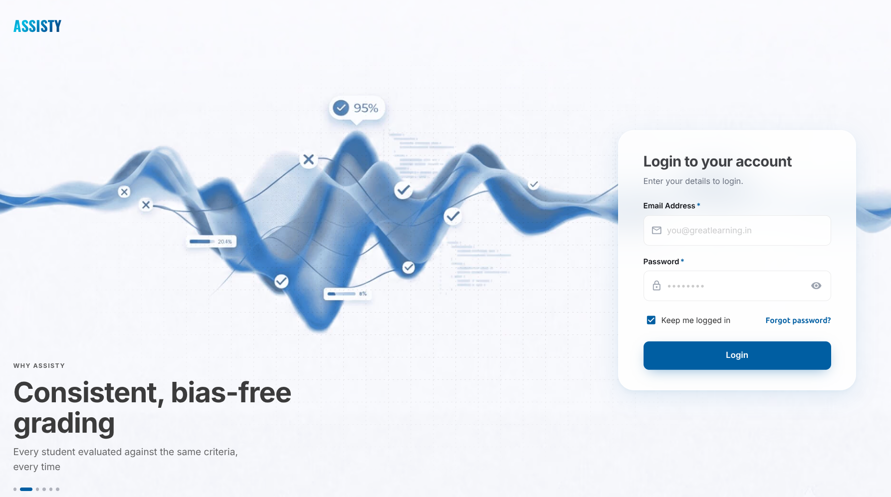
Use the Manual Upload feature
Open Manual Imports from the left sidebar to import assignment specifications and student submissions.
Prepare beforehand
- All relevant assignment data and supporting materials such as articles or case studies.
- Compile learner submissions into a single ZIP archive. Individual files must be
.pdfor.docx. - Follow the naming convention
studentid_filename.pdf.
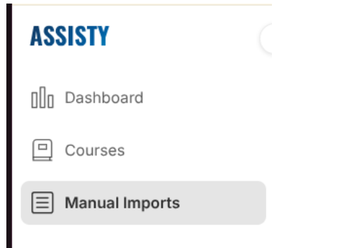
Upload assignment details
From Manual Imports, click + New assignment to start uploading the assignment details.
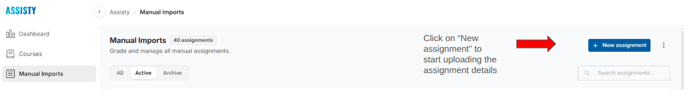
Option 1: you already have a question file
Upload the question file in Assignment source to auto-prefill the assignment details.
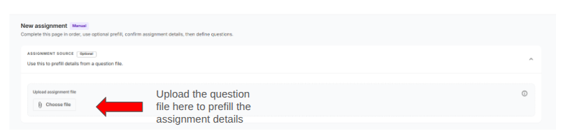
Option 2: enter assignment details manually
Fill in the title, total points, description (instructions + questions), and attach any supporting materials such as case studies or reference articles.
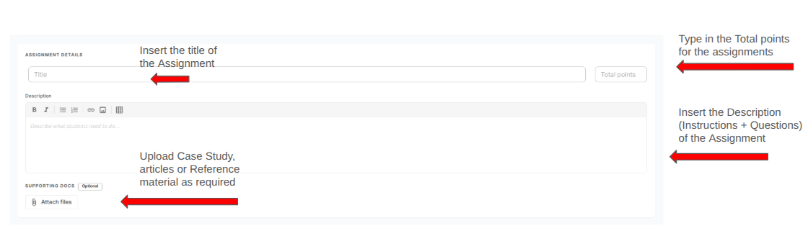
Add questions and the marking scheme
Under Questions and marking, define what to grade students on. Enter each question, the points it's worth, and the marking scheme if you have one.
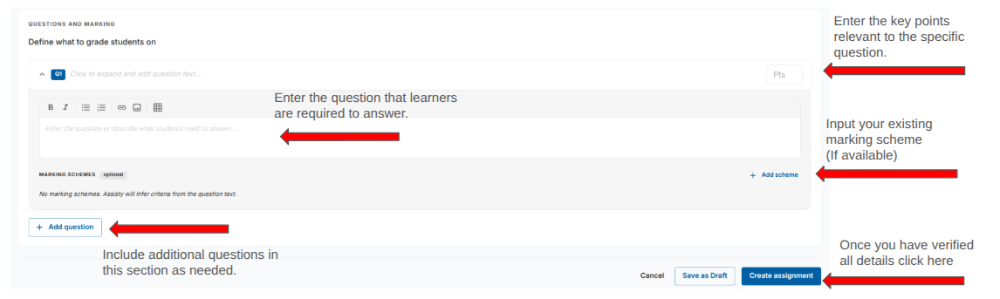
Marking scheme example
An expanded marking scheme for a customer-service question with three criteria (Greeting & Professionalism, Problem Identification & Listening, and Resolution & Action Plan), each with its own points.
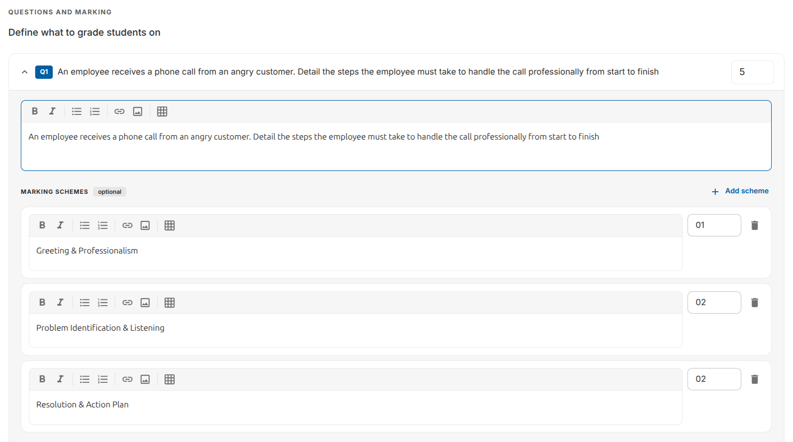
Review assignment details and initiate grading
Confirm the assignment information and questions are correct on the Details tab. Use Edit to modify anything, then click Start Grading.
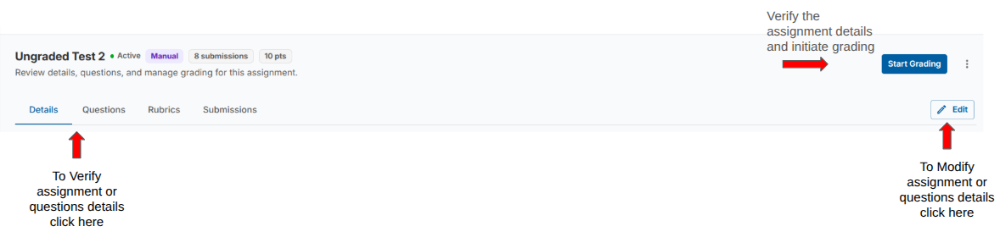
Upload learner submissions
Drop the submissions ZIP into the Add or Select Submissions area, or reuse a previously uploaded set. Assisty automatically zips loose files if you drop multiple PDFs, DOCX, images, notebooks or text files.
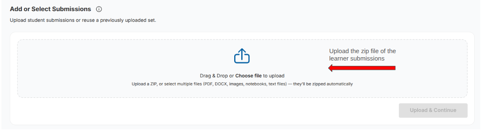
Once the ZIP is parsed, verify all learner files are listed correctly and the naming convention is followed. Then click Upload & Continue.
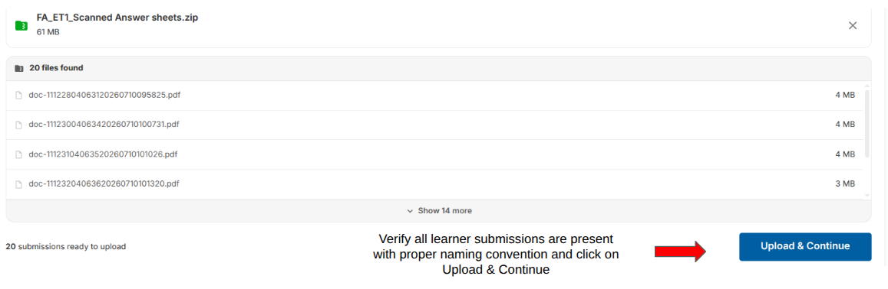
Generate rubrics
With the submissions in place, click Generate Rubric. Assisty analyses the assignment and the sample submissions to draft a rubric aligned to your marking scheme.
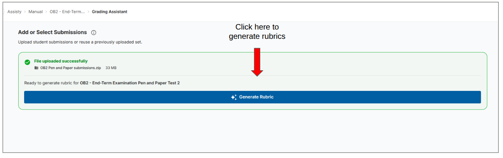
Review, modify and approve the rubric
Review the generated rubric criteria. Click Edit on any question to adjust criteria, add or delete requirements, or change point values. Once you're satisfied, click Approve & Start Grading.
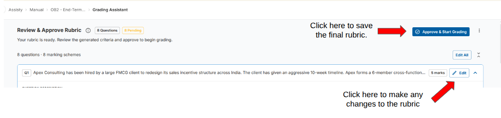
Review and finalise grading
Assisty grades every submission against the approved rubric. The progress panel shows how many are graded and the estimated time to completion.
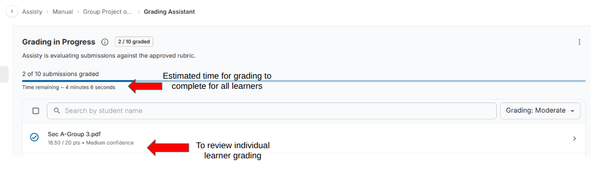
Review an individual submission
Click a student to open the individual grading view. You'll see the overall feedback, awarded points, strengths, areas to improve, and a question-by-question breakdown with evidence quoted from the submission.
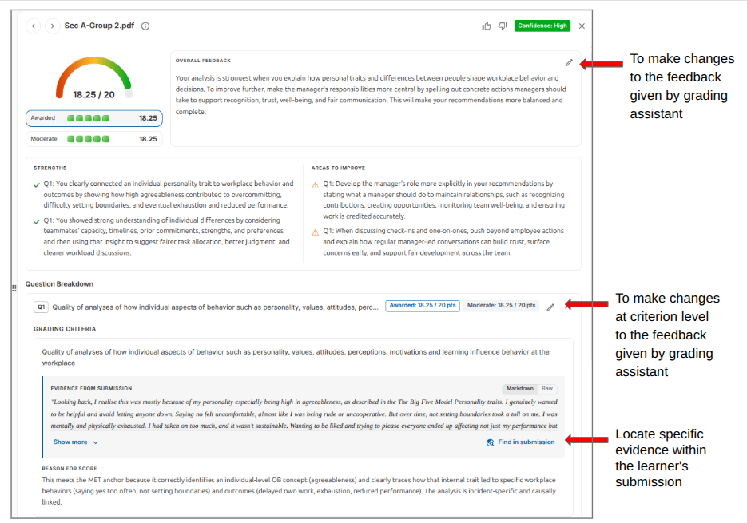
Confidence flags
Each submission carries a confidence flag. High confidence lets you approve quickly. Medium or low suggests ambiguity, so verify point deductions and comments before approving.
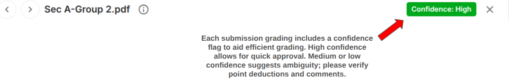
Grading strictness
Toggle between Lenient, Moderate and Strict to recalculate scores against the same rubric. Useful when calibrating before you commit to a final pass.
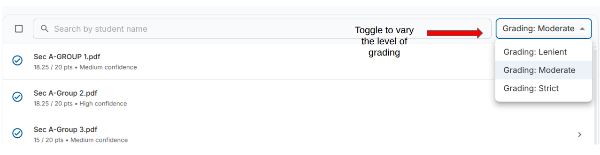
Final approval
Select individual submissions (or a whole set) and use Approve or Disapprove to finalise grading. You can also open a submission and approve it from the detail view.
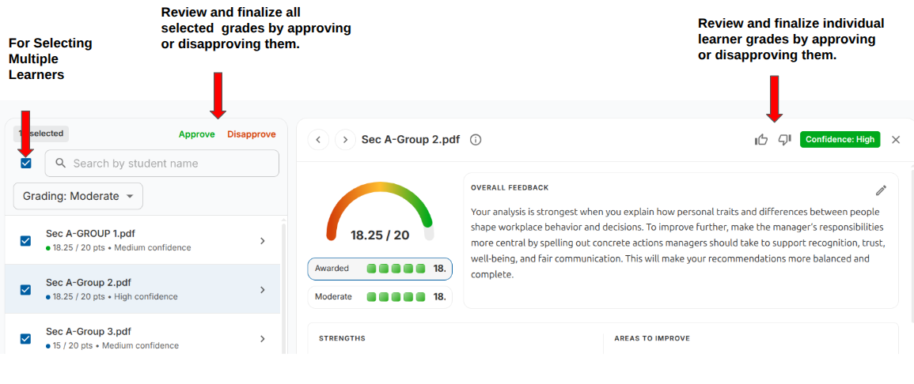
Analytics and download results
When grading completes, mark it done and open the Analytics panel. It shows the highest, lowest and average scores, the score distribution, and the top and bottom five performers. A question-level view offers a per-question breakdown of performance.
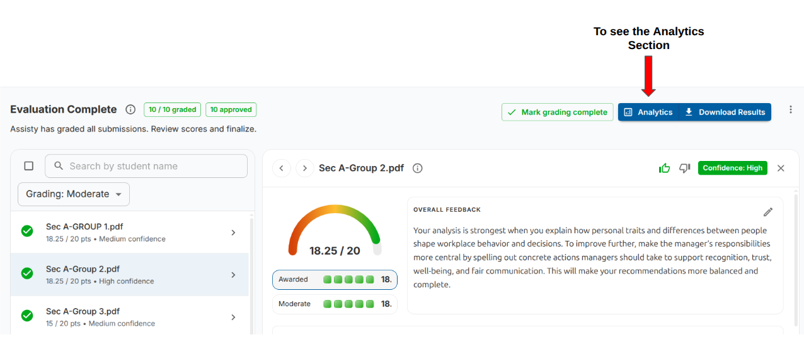
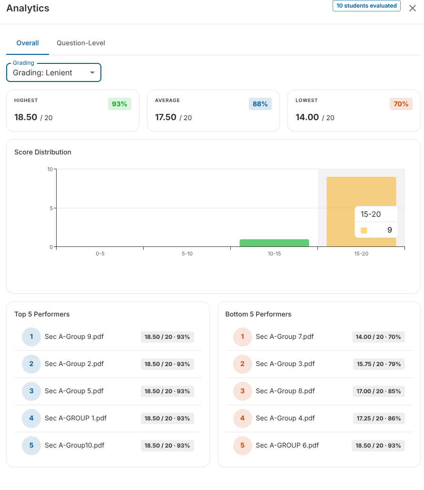
Download results
Click Download Results to export a CSV grading sheet consolidating student identifiers, assignment details, qualitative feedback, and automated scores at both the question and overall levels.
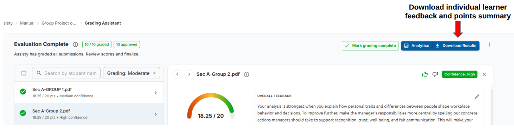